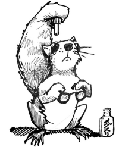

This page has usage examples for the following words:

a pupil 瞳孔 どうこう
cataract 白内障 はくないしょう
contact lenses コンタクト
cross-eyed 内斜視 ないしゃし
eyeglasses 眼鏡 がんきょう・めがね
eye drops, eye lotion 目薬 めぐすり
farsightedness, metropia 遠視 えんし
frame (of eyeglasses) 眼鏡の枠 めがねのわく
glaucoma 緑内障 りょくないしょう
nearsightedness, myopia 近視 きんし
optometry, eye examination 検眼 けんがん
ophthalmologist 眼科医 がんかい
optometrist 検眼医 けんがんい
stigmatism 乱視 らんし
strabismus 斜視 しゃし
wall-eyed 外斜視 がいしゃし
My nearsightedness (farsightedness) seems to be getting worse. I can’t see things clearly.
近視（遠視）の度が進んだのか、ものがはっきり見えなくなりました。
きんし（えんし）の どがすすんだのか、ものがはっきりみえなっくなりました。
Sooner or later, will I need to wear bifocal lenses(bifocals)?
そろそろ遠近両用メガネをしなければならないでしょうか。
そろそろ えんきんりょうようメガネをしなければならないでしょうか。
When was your last eye check up?
(When was the last time you had your eyes checked?)
最近の検眼はいつでしたか。
さいきんのけんがんはいつでしたか。
Can you read the bottom line?
最下段（の文字）が読めますか。
さいかだん（の もじ）が よめますか。

No, they are all blurry.
いいえ、全部、ボケて見えます。
いいえ、ぜんぶ、ボケてみえます。
Things look blurry.
ものが霞んで、ぼんやり見えます。
ものがかすんで、ぼんやりみえます。
I wonder if it is the beginning of a cataract.
白内障のはじまりでしょうか。
はくないしょうのはじまりでしょうか。
We’ll check your eye pressure.
眼圧を測ります。
がんあつをはかります。
Try to keep your eyes open. You will feel a puff of air.
眼に空気を吹き掛けますが、眼をつぶらないように。
めにくうきをふきかけますが、めをつぶらないように。
Look straight ahead, and push the button when you see a flash.
まっすぐ前方を見つめて下さい。そしてピカッと光るものを見たら、このボタンを押してください。
まっすぐぜんぽうをみつめてください。そしてピカッとひかるものをみたら、このボタンをおしてください。
I’ll put some eyedrops (into your eyes) to dilate your pupils.
目薬をさして瞳孔を拡げます。
めぐすりをさして どうこうをひろげます。
Look towards the right(left).
右（左）の方を見てください。
みぎ（ひだり）のほうをみてください。
Have you noticed any change in your vision?
視野に何か異常がありますか。
しやになにかいじょうがありますか。
Yes, my field of vision seems narrower.
はい、視野が狭くなったような気がします。
はい、しやがせまくなったようなきがします。
I will refer you to a neurology specialist.
脳神経専門医を紹介しましょう。
のうしんけいせんもんいを しょうかいしましょう。
A conversation between a patient and a doctor about optometry, eye examination
Patient:
It’s getting harder for me to see small characters. They are blurry. It may be the time to have new eyeglasses. In Japan, an optician’s shop has its own optometrist. I hear that it is a different system in the U.S.
細かい字がかすんで読みづらくなってきました。そろそろ新しいメガネに作り替える時期かと思います。日本では、眼鏡屋さんに専属の検眼医がいますが、アメリカのシステムは違うそうですね。
Doctor:
You have first the optometry examination and then, eye glasses are made according to the result of optometry exam. The process is the same in both countries. The difference may be that in the U.S., you can have these two done separately, that is, the optometry exam at one place and eye glasses made at another place as long as you have the form showing the result of the optometry exam (called refraction). However, it is convenient to have both done at the same place.
まず検眼、それに合わせてレンズを作ってもらうという手順は同じです。違っている点は、アメリカでは検眼をしてもらう所と、レンズを作ってもらう所が、同じでなくても良いことでしょう。ただし、レンズを作ってもらう為には、検眼の結果を書いた処方箋（レフラクション）を持参することが必要です。すべて一箇所でできれば便利なことは、いうまでもありません。
My two cents 一言おせっかい
The eye is the window of the soul.
目は心の窓
[ke03]
| © 1995-2013 NACOS International Institute. All Rights Reserved. |